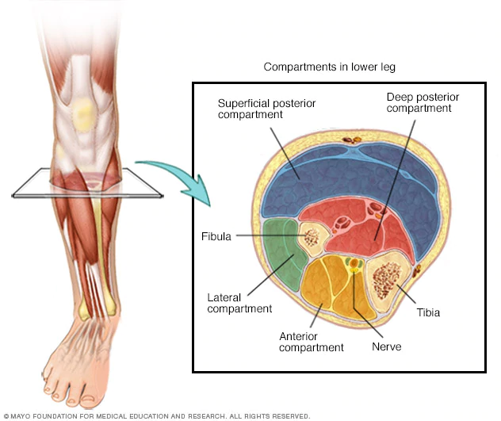

Two notes:
In early 2015, I was diagnosed with stress reactions (stress on the bone, but not a physical fracture) and chronic compartment syndrome in both shins. This was due almost entirely to my running form, in which I would strike with my forefoot ahead of my body. Six years later, I am still dealing with it. As of now (20 November 2020), I am seriously considering fasciotomy, the surgery used to cure compartment syndrome.
First, the idea of fascia needs to be understood. From Benjamin's The fascia of the limbs and back – a review:
‘Fascia’ is a vague term that is derived from the Latin for a band or bandage. It has long been used by gross anatomists to embrace a spectrum of undifferentiated mesenchymal tissues that wrap around what are sometimes regarded as being the more ‘specialized’ organs and tissues of the body, or form a packing material between them.
In other words, it's a type of tissue that surrounds or separates organs and muscles. This surrounding and separating forms the so-called "compartments".
Diagnoses of compartment syndrome of the shin are almost entirely either the lateral or anterior compartments.